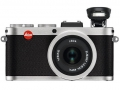

器材库 > 不可换镜头数码相机 > X2

规格总览
发布日期
2012-05-10
厂家推荐价格
216,300.00 （日元）
影像规格
影像传感器
CMOS
影像传感器尺寸
23.6×15.8 mm
总像素
1650万
有效像素
1620万
静态图像尺寸
4928×3264, 4288×2856, 3264×2160, 2144×1424, 1632×1080, [DNG] 4944×3272
静态图像格式
JPEG, DNG, DNG+JPEG
画幅比
3:2
镜头和对焦
镜头结构
8片/6组
非球面镜片
1片
焦距
24mm
等效35mm画幅焦距
36mm
最大光圈
f/2.8
最近对焦距离
30cm
自动对焦系统
对比式AF系统
对焦模式
单点AF, 11点AF, 脸部侦测AF, MF
AF辅助灯
有
手动对焦
支持
曝光控制
测光模式
中央重点测光, 多分区评价测光, 点测光
曝光模式
P（程序自动曝光）, A（光圈优先自动曝光）, S（快门速度优先自动曝光）, M（手动测光曝光）
快门速度
30 - 1/2000秒
曝光补偿
±3EV以1/3EV级调整
自动包围曝光
1/3 - 3EV步长，3幅
ISO感光度
100, 200, 400, 800, 1600, 3200, 6400, 自动, 12500
白平衡
白炽灯, 闪光灯, 色温调节, 阴天, 阴影, 自动, 手动白平衡, 晴天
自拍
12秒, 2秒
连拍
3 fps / 5 fps，最多8张（JPEG fine+DNG）
闪光灯
内置闪光灯
弹出式
闪光模式
自动, 慢速同步, 减轻/消除红眼, 强制闪光, 减轻红眼慢速同步
闪光涵盖范围
0.3 - 2.0m（ISO 100）
闪光补偿
±3EV以1/3EV级调整
外接闪光灯
SF24D, SF58
取景规格
LCD类型
彩色TFT LCD
LCD尺寸
2.7英寸
LCD像素
23万
视野率
100%
文件输入/输出
内置存储容量
110MB
存储卡
SD/SDHC, SDXC
数据接口
USB2.0
视频/音频接口
AV 输出, HDMI 输出
配件端口
热靴, 外接电源插孔, 脚架螺丝孔
电源
电池
锂离子充电电池
续航能力
可拍摄约450张（CIPA标准）
外接电源
AC 100-240V, 50/60Hz
外观
材质
机身采用超轻镁铝合金制成
颜色
银色, 黑色
尺寸
124×69×51.5mm
重量
316g
其它
附件
可充电电池BP-DC8, 电池充电器BC-DC8, 电池盖, 皮革背带, 用户手册, USB线缆, 镜头盖, 软件光盘
软件
AdobePhotoshop Lightroom
一直发烧2016-08-27 13:444.81 分
操作性 5.00功能性 4.50美观性 5.00趣味性 4.50耐用性 5.00性价比 4.50解像力 5.00色彩还原 5.00
1d系列2015-02-12 09:284 分
操作性 5.00功能性 4.00美观性 5.00趣味性 3.00耐用性 5.00性价比 1.00解像力 4.00色彩还原 5.00
hopefun2014-12-12 12:424.56 分
操作性 4.50功能性 4.50美观性 4.50趣味性 4.50耐用性 4.50性价比 4.00解像力 5.00色彩还原 5.00
天米一2013-07-10 21:434.81 分
操作性 4.50功能性 5.00美观性 5.00趣味性 4.50耐用性 4.50性价比 5.00解像力 5.00色彩还原 5.00
yy2182013-04-12 08:394.69 分
操作性 4.50功能性 4.50美观性 5.00趣味性 4.50耐用性 5.00性价比 4.50解像力 4.50色彩还原 5.00
钛色旁轴2013-03-26 10:434.13 分
操作性 4.00功能性 4.00美观性 4.50趣味性 4.50耐用性 4.00性价比 4.00解像力 4.00色彩还原 4.00
wynton2013-02-12 17:234.56 分
操作性 5.00功能性 5.00美观性 5.00趣味性 4.00耐用性 4.50性价比 3.00解像力 5.00色彩还原 5.00
bob96962012-10-28 16:454.81 分
操作性 5.00功能性 5.00美观性 5.00趣味性 5.00耐用性 4.50性价比 4.00解像力 5.00色彩还原 5.00
先人板板2012-08-01 20:144.44 分
操作性 4.50功能性 4.50美观性 5.00趣味性 3.50耐用性 5.00性价比 3.00解像力 5.00色彩还原 5.00
瞬间蔚蓝2012-07-29 16:344.56 分
操作性 4.50功能性 5.00美观性 5.00趣味性 3.50耐用性 5.00性价比 3.50解像力 5.00色彩还原 5.00
产品图 / 样片
徕卡 X2
评测 / 相关文章
- 详细内容 （存档）
- ［试用］徕卡X系茶馆 （存档）
- ［试用］Leica X2：随身相机的旅程 （存档）
- ［资讯］徕卡推出限量版X2 5296 Kentaro Kobuchi （存档）
- ［资讯］徕卡X2横滨限量版现已上市 （存档）
- ［资讯］徕卡公布X2最新固件 （存档）
- ［试用］海外简评：徕卡X2初体验 （存档）
- ［资讯］徕卡相机新品真机图赏 （存档）
相关文章
- ［试用］徕卡X系茶馆 （存档）
- ［试用］Leica X2：随身相机的旅程 （存档）
- ［资讯］徕卡推出限量版X2 5296 Kentaro Kobuchi （存档）
- ［资讯］徕卡X2横滨限量版现已上市 （存档）
- ［资讯］徕卡公布X2最新固件 （存档）
- ［试用］海外简评：徕卡X2初体验 （存档）
- ［资讯］徕卡相机新品真机图赏 （存档）
- ［资讯］徕卡X2 （存档）